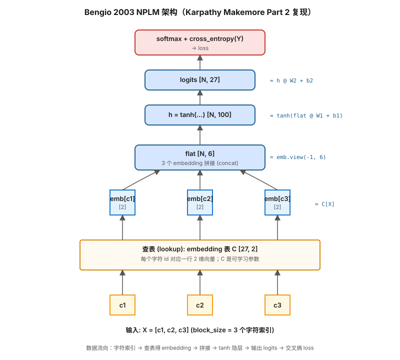
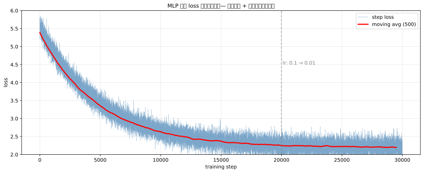

Bigram 模型的根本问题：
| 维度 | Bigram | MLP (NPLM) |
|---|---|---|
| 上下文 | 只看前 1 个字符 | 可以看前 N 个字符 (block_size) |
| 参数化方式 | 27×27 计数表 | 神经网络 + embedding |
| 上下文扩展 | 表大小 = 27^N 指数爆炸 | 参数量线性增长 |
| 字符相似性 | 没有"a 和 e 都是元音"的概念 | embedding 自动学到相似性 |

关键设计：
F.cross_entropy（数值更稳定）| 参数 | 取值 | 含义 |
|---|---|---|
block_size | 3 | 上下文窗口大小，看前几个字符预测下一个 |
embedding_dim | 2 ~ 10 | 每个字符向量的维度 |
hidden_size | 100 ~ 200 | 隐藏层神经元数 |
vocab_size | 27 | 26 字母 + . 终止符 |
batch_size | 32 | 每次梯度更新用多少样本 |
参数量估算：27 × emb_dim + (block_size × emb_dim) × hidden + hidden × 27
block_size = 3
def build_dataset(words):
X, Y = [], []
for w in words:
context = [0] * block_size # 用 . 填充开头
for ch in w + '.':
ix = stoi[ch]
X.append(context)
Y.append(ix)
context = context[1:] + [ix] # 滑动窗口
return torch.tensor(X), torch.tensor(Y)要点：每个样本是 (前 block_size 个字符, 下一个字符)，整个名字会被切成多个训练样本。
g = torch.Generator().manual_seed(2147483647)
C = torch.randn((27, 10), generator=g) # embedding 表
W1 = torch.randn((30, 200), generator=g) # 30 = 3×10
b1 = torch.randn(200, generator=g)
W2 = torch.randn((200, 27), generator=g)
b2 = torch.randn(27, generator=g)
parameters = [C, W1, b1, W2, b2]
for p in parameters:
p.requires_grad = Truefor step in range(200000):
# ---- minibatch ----
ix = torch.randint(0, Xtr.shape[0], (32,))
# ---- forward ----
emb = C[Xtr[ix]] # [32, 3, 10]
h = torch.tanh(emb.view(-1, 30) @ W1 + b1) # [32, 200]
logits = h @ W2 + b2 # [32, 27]
loss = F.cross_entropy(logits, Ytr[ix])
# ---- backward ----
for p in parameters:
p.grad = None
loss.backward()
# ---- update ----
lr = 0.1 if step < 100000 else 0.01 # 学习率衰减
for p in parameters:
p.data += -lr * p.grad训练过程典型的 loss 曲线（模拟）：

@torch.no_grad()
def split_loss(split):
x, y = {'train': (Xtr, Ytr), 'val': (Xdev, Ydev), 'test': (Xte, Yte)}[split]
emb = C[x]
h = torch.tanh(emb.view(-1, 30) @ W1 + b1)
logits = h @ W2 + b2
return F.cross_entropy(logits, y).item()g = torch.Generator().manual_seed(2147483647 + 10)
for _ in range(20):
out = []
context = [0] * block_size
while True:
emb = C[torch.tensor([context])]
h = torch.tanh(emb.view(1, -1) @ W1 + b1)
logits = h @ W2 + b2
probs = F.softmax(logits, dim=1)
ix = torch.multinomial(probs, num_samples=1, generator=g).item()
context = context[1:] + [ix]
out.append(ix)
if ix == 0: break
print(''.join(itos[i] for i in out))这是整个课程第一次系统出现"工程化训练"的套路，每一个后面都会一直用：
1e-3 ~ 1 之间用 logspace 取候选loss vs lr，找曲线下降最快的拐点不要忘记把参数加进 parameters 列表，否则 backward 不更新
emb.view(-1, 30) 不是 reshape，是 concatenation 的工程实现
[N, 3, 10] → [N, 30] 等价于"把 3 个 10 维 embedding 首尾相接"
F.cross_entropy(logits, Y) 内部已经做了 softmax
不要自己再 softmax + log，会数值不稳定
p.grad = None 比 p.grad.zero_() 更高效
PyTorch 会跳过空梯度的累加
学习率太大初期 loss 会爆炸，太小训练慢
用 lr finder 而不是拍脑袋
这节的架构是所有现代 LLM 的"原型"：
| Bengio 2003 / Karpathy MLP | Transformer (GPT) |
|---|---|
| Embedding table C | Token embedding + positional embedding |
Fixed block_size 上下文 | Self-attention 看整个上下文 |
tanh(emb.view(-1, N) @ W1 + b1) | Attention + FFN |
| 单层 hidden | 多层堆叠 (Layer Norm + Residual) |
| Cross-entropy on next token | 完全一样 |
理解了 NPLM，Transformer 的训练目标和损失函数对你来说就没有新东西了 —— 改变的只是中间那一层怎么计算上下文。
block_size 从 3 改成 5、8，看 val loss 怎么变emb_dim 从 2 改成 10、30，看 val loss 怎么变hidden_size 从 100 改成 300，看是否过拟合